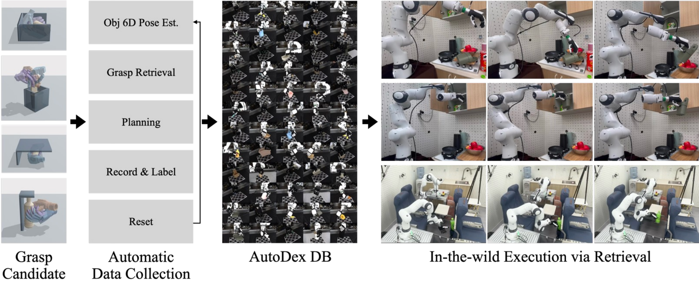

Autonomous Real-World Data Collection for Dexterous Grasping.
AutoDex closes the loop between simulation-generated grasp candidates and real-world validation: it executes multi-finger grasps, labels lift-and-hold success or failure, and actively resets objects to collect physically grounded dexterous-grasp data with no human in the loop and far less manual effort than teleoperation.
Real dexterous-grasp data is expensive: simulation is scalable but unreliable for contact, while human teleoperation is physically valid but slow and biased by operator choices. AutoDex is an automated real-world data-collection system that proposes geometrically feasible grasps in simulation and validates each one by physically executing it with a multi-fingered hand.
The system closes the full loop without human intervention: it accepts candidates from a generator, localizes the object with dense 20-camera tracking, plans and executes collision-monitored motions, labels lift-and-hold success or failure, and actively resets the object for the next trial — then repeats. Using AutoDex we collect 3,593 real-world-validated grasps (successes and failures) across the Allegro and Inspire hands on 100 objects, 4.8× faster than teleoperation; real-world validation raises downstream grasp success from 34% to 76%.

The AutoDex pipeline. Each grasp candidate is validated by automatic real-world data collection, building the AutoDex database — which is then queried for in-the-wild execution via retrieval.
Every trial runs these four steps with no human in the loop — then the loop closes and starts the next grasp. Click a step.
A dense 20-camera rig localizes the object — even under severe hand–object occlusion — so the system knows exactly what it is grasping and where.
A candidate grasp is selected and a collision-free arm trajectory is planned to it. The hand closes on the object — with a residual-torque monitor guarding against unexpected collisions during automated runs.
The robot lifts and holds. Lift-and-hold success or failure is measured automatically and written as a ground-truth label — the dataset records both successes and failures.
The object is rarely where the next trial needs it. AutoDex re-grasps and re-poses it to the next target pose automatically — the step that keeps the loop going. Then it begins again.
AutoDex executing validated grasps on the real robot, with no human in the loop. Pick an object.
AutoDex builds a real-world-validated dexterous-grasp dataset — successes and failures — across three scene types, with synchronized 20-view observations and robot-state logs.
@misc{choi2026autodex,
title = {AutoDex: An Automated Real-World System for Dexterous Grasping Data Collection},
author = {Choi, Mingi and Kim, Gunhee and Kim, Jisoo and Kim, Taeksoo and
Ha, Taeyun and Lim, Jongbin and Joo, Hanbyul},
year = {2026}
}